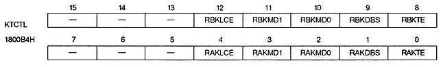

Coefficient line color enable bit : Coefficient line color enable bit (RAKLCE, RBKLCE)
| RAKLCE | 1800B4H | Bit 4 | For rotation parameter A |
| RBKLCE | 1800B4H | Bit 12 | For rotation parameter B |
∙ This bit is valid only when the corresponding coefficient table is used and the data size is 2 words.
| RxKLCE | Process |
| 0 | Do not use line color screen data in coefficient data |
| 1 | Use line color screen data in coefficient data |